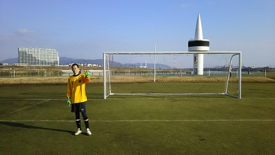
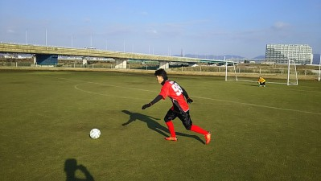
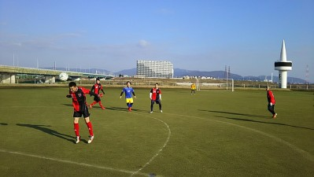

[184] (無題)
日曜日参加された方、お疲れ様でした。
天気も良く、芝生で気持ち良くサッカーできましたね(^^)
グラウンド取って頂いてありがとうございます！
試合も6本もできましたし楽しかったです！
試合内容も失点が1点だけでピンチも少なかったですし、パスもいい感じに繋がってたと思います！
点も2点取れて嬉しかったですが、てらさんやまえちゃんのアシストあってこそなので、アシスト王も誰になるのか注目ですね。
まえちゃんは5本目終わった段階で、今日は真面目過ぎたからラストはチャラけるわ～と言っていました(^^)
有言実行で、ドリブルで相手の股抜き決めまくっていたので、さすがやな～と思いました(^^)
あのテクニックは凄すぎです（≧∇≦）
てらさんも接待アシストして頂いてありがとうございます！
いい所だけ持っていってすいません。。。
個人的には苦手なドリブルを中央でチャレンジできた事が収穫でした。
シュートもフカさないようにインサイドでコースを狙うように注意できたかなと思います^ ^
試合もコンスタントに組んで頂いてありがとうございますm(._.)m
今シーズンで2桁得点＋得点王になれるように頑張ります！
[183] (無題)
本日参加された皆さん、お疲れ様でした。
今日は天候も寒くもなく暑くもなく、丁度いい感じで、グランドも良かったですね。
僕は初めて?対戦させていただいたジェネシスさんも、気さくな方が多くて楽しめました。
初ゴールは、初めてトップの位置で試合に入り、相手キーパーのパスを、タカさんがカットして、相手DFとわだっちの幻影を交わし(笑)、ゴール前に、さぁどうぞというパスをインサイドで合わせただけでした。
相手キーパーが、たまたま前に所属してたチームメイトだったので、試合終了後に、八百長疑惑をいじられ、あれは0,5点やと言われたのは面白かったです(笑)
あとは、GKヤスさんのワンハンドでのスーパーセーブが印象的でした。
まっさんのカウントは今日は２つプラスされた事を最後になりましたが報告します(笑)
[182] 2016・02・28 活動報告

今日はさ、去年から予定にアップしてたし、いいグランドだから大勢来るだろうって思ってたら、欠席がどんどん増えて昨日の今頃まで１０人、最後にヤスさんが出席になって、その後に参加予定者に体調崩さないようにメールしたわ（笑）
んで、うちはなんとか１１人で戦いました。参加された皆さんお疲れ様でした。昨日の時点で２０分４本でまったりしようかなって思ってたけど、やっぱり滅多に当たらないグランドなのでいっぱいしようって思って、合計１チーム６本しました。
うちの身勝手なスケジュールにもかかわらずお相手して頂いたSPARKさん、ジェネシスさん本当にありがとうございました。今後ともよろしくお願いします。
今日は暑かったまではいかないけど、ほんと夕方まで僕は夏場と同じ格好でしてました。１週間前とかは雨とかちょっと心配でしたが、反対に太陽がまぶしくて見えないほどいいお天気で良かったです。
さて、試合ごとに得点シーンを中心に振り返っていきたいと思います。
１本目はSPARKさんでした。全体的にはうちが攻めてた感じがしましたが、カウンターでやられましたね。ワントップで上手くバックラインを突破され、何とか防いだものの、こぼれ球をあれは誰も取れない左カーブ掛かりながらのループシュートで先制点を奪われました。結果的にはこの１点のみでしたね。
試合終了前にうちも追いつきました。今日はアシスト王というか縦パスが絶好調だったまえちゃんからコート中央で左サイドから走りこんできたおかちゃんにスルーパス、一瞬オフサイド？って相手さんも止まってくれた感じもありましたが、裏に向けてキーパーと１対１飛び出してきたキーパーの股を抜くミドルシュートが決まりました。ただ、あの股抜きはたまたまらしいっす（笑）
２本目はジェネシスさんとでした。攻守一体でいいゲームでしたね。たっちゃんの惜しいミドルがありましたが、それがこの後の得点に繋がる布石でしたね。
僕的にはこの試合だけかな、切り込んだのは。サイドからえぐってキーパーと１対１になって、以前と同じようにキーパーとポストの間を狙いましたがファインセーブに撃沈、その後のコーナーは実は直接狙ってました。アウトに超えた所でカーブした（涙）
３本目は再びSPARKさん。ここでもまえちゃんのキラー縦パスが炸裂して、縦に抜けたたっちゃんがちょっと遠めからシュート、キーパーに当たりましたが威力があって、そのままゴールが決まりました。たっちゃんチーム加入以来初得点？おめでとね。
でも左サイドから絶妙のクロスを上げた僕のボールをドフリーでゴール前でゴールラインから５０ｃｍもない所で、ヘディングでゴールバーの上を越すって、「うお」じゃねえよ（笑）。
後はバックパスミス？それともうちがパスしたのかな？相手チームさんのキーパーが取り損ねて必死に戻って取ろうとしたら左側のポストにカーン、その跳ね返ったボールに飛び込んだのはさすがエガリテの走り屋おかちゃん、さすがって思ったらポストにカーン（笑）、あれが入ってたらハットトリックやったねえ。
４本目はジェネシスさんとでした。個人的にキーパーしてて、攻めの方はあんまり覚えてない。ゴールキックもむかい風であんまり飛ばず、追い風だと、相手のペナエリアまで届いたことあるんやけどなあ、段々とパワーが無くなって衰えてきてるんかな（涙）、まえちゃんのキーパーキーパーというスパルタが・・ぶつかるの怖いんよ。あっこまで飛び出しただけで許しておくれ（笑）
まあ、２本目と同じく一進一退でしたね。
５本目はSPARKさんと最後の試合。１５分になったらえらく時間がたつのが早く感じました。そんななかでも今日のヒーローは得点を取ってくれました。
１本目はテラさんが右サイドを駆け上がって行ったので試合前の打ち合わせ通り、僕も左サイドからゴール前へ、それにたっちゃんも駆け上がってきて、クロスが来るって用意してたら、後ろ斜め４５度くらいにグラウンダーパス、えって思ったら、Ｓ2000スーパーターボ搭載のおかちゃんが上がってきてて、結構な距離からノートラップでシュート、これもグラウンダーで左側に逃げるような回転でゴール左側に決まりました。おかちゃんが決めたのはいいんだけど、走り損やった（涙）
もう一点はたっちゃんが１点目と同じような感じで、まえちゃんからの縦パスを受けてドリして、いい感じの強烈なシュートで２得点目になりました。その後は３点目を狙いすぎた感が出てたけどね（笑）
さーて、最後はここを読んだらＷさんが悔しがるとは思いますが、ジェネシスさんと最後の１５分でした。相変わらず攻守一体でしたが、右サイドでボールを奪ったタカさんがゴール前に切れ込んで、シュートを打とうと思ったら冷静に横へパス、ゴール前に駆け上がっていたハマさんがそれをダイレクトでシュート、以前のシュートよりは威力は無かった感じですが、ダイレクトで打ったのもあって右にカーブを描いてループ気味にゴールが決まりました。ハマさんも初得点だよね、「今夜は祝杯や」って言ってたから今頃はべろんべろんになっているのかも（笑）、今日はＷさんの幻影は見えなかったみたいですね。
あとは今日はひたすら接待って言ってたテラさんが最後我慢できずに、中央を突破切り返しまくりすぎて、最後はゴール横に転々と・・・、蹴った瞬間に座り込んで顔を手で押さえてた（笑）
僕としては昔本職だった、左サイドバックしたけど、あかん動きがセンターバックになってまう（涙）
今日のヒーローのたっちゃん、おかちゃん、ハマさんは（まえちゃんもたまにはね（笑））感想のカキコよろしくお願いします。
終ってから帰るのにえらく長く道のりが感じたわ・・、テラさんの三泊四日の荷物やって言われて、まえちゃんとかにもいじられるし、あの荷物のおかげでね（笑）
まあ、１１人ギリギリで皆さん協力しながら怪我もなく出来たことが何よりでしたね。
あ、画像は今日のヒーローがすしざんまいしている瞬間（笑）
[181] 2016・02・21 活動報告
今日は全員で１４名の参加がありました。急遽、アラスカより参加してくれていつも通りゴールを外してくれた人に癒されましたね～。まっとんが腰に違和感があって途中で見学になりましたが、大丈夫かな？
現地は予想通り、水たまりいつもの場所の奥の方がなんとか出来そうだったのでしましたが、たまにデスゾーンがありましたね。僕もですが皆さんもシューズはビチャビチャになったんじゃないかと思います。
最初にボール二つ鳥かごしてから、あとは今日はゴールを立てずに延々とミニゲしました。
素晴らしいプレイはテラさんからのシュート性のクロスに走りこんできたわだっちがダイレクトで合わせたゴールでしたが、印象に残ったのはゴール前でのもりちゃん劇場でしたね（笑）、ギリギリでゴールラインからボールをかきだすわ、こけまくるはでかなり動いていた気がします。体力無いふうに見せかけ詐欺疑惑がありますからね（笑）
あとはなかやんがまえちゃん、てらさんとテクニシャン２名から１対1でボールを奪ってゴールしたのもいいプレーでした。奪われた後？テラさんが追いかけてきて、こけたのはおもろかったっす。（笑）
まあ、僕もこけまくってたんで、いいとこなかったですね。
まあ、そんな感じで風もありましたが、楽しく出来ました。来週は試合です。参加される方は集合時間守るようにお願いします。
参加された皆さん、お疲れ様でした。
追記：練習終了後、藪の中に不法投棄をしに行った人がいましたね（笑）ていうか、土っぽかったけど？なんで堤防でなん（笑）
[180] 二次会
昨日、参加された皆さん、お疲れ様でした。また、ぐっさん、幹事していただいて有り難うございました。
仕事先から自宅に戻る途中に交差点でガス欠してしまい、遅刻してしまいましたが、雨の中、車を押していただいた２名の警察官の方、クラクションの嵐から助けていただき、有り難うございました(笑)
二次会は、ワタミで１３名で飲みました。
最近、すっかりダークの称号を預かっておりますが、ごろうさんの足元にも及ばない事が分かり反省しております。
普段、一瞬にボールを蹴っている皆さんと飲むビールは、やっぱり格別で美味かったです！店出たのが１２時前？位だったので皆さん帰られたと思いが無事たどり着かれたでしょうか。次回はＧＷか、お盆休みかな。
また企画して飲みましょう！
[179] 2016・02・13 宴会報告（笑）
明日は雨のため中止となりました。参加予定だった皆さん、次回によろしくお願いします。まあ、ほとんどの方がその分、明日の朝まで飲み歩きが出来るようになって良かったかな（笑）
去年も同じカンペイマラソンの日は雨天中止だった気がします。
今日は有志で企画して頂いた飲み会がありました。合計で１５名。幹事をしてくれたぐっさんいろいろとありがとうございました。
僕は１次会で遠慮させて頂きましたが、今頃は１０名くらいの人が２次会へ、その後３次会を経て、近くのごろうさんかスガちゃんの家で最後徹夜でってコースですかね。（笑）
うちのチームとして公式？には新年最初のご飯会くらいで、後は特に時期を決めてイベントをとかは決めることはないですが、たまにまた声を掛け合ってこういった飲み会とかが出来ればいいですね。
普段話すことの無いこととかいろんな話があったりで楽しい時間を過ごせたと思います。改めていいメンバーに巡り合えて良かったなって思いました。
２次会以降の報告は、どえらい理由で遅れてきたスーパーダークハマーにお任せします。（笑）
また来週以降、一緒に楽しくボールを蹴っていきましょう。
ていうか、今この時間、雷鳴ってめちゃ激しい豪雨になっているけど２次会参加メンバー大丈夫かな？ゆっきーの頭に雷が落ちますように（笑）
[178] 2016・02・07 活動報告
between＝間（笑）
今日はスガちゃん語録に対するまえちゃんのつっこみが見どころでしたね。
途中、あられが降ってきたりと寒い時間帯がありましたが、時には日が照っていい感じの時もありました。本日参加は体験参加さんも含めて１５名でした。
寒いのと大勢いたのでいつもよりかはミニゲの時間を増やしました。
まずは２チームで鳥かごして、アップしました。次にポストシュートして、それからポストがボールを受けて、その後ろにデフェンスを配置してかわしてシュートをしました。僕は最初、デフェンスの役をしましたが簡単にプレッシャーレベルでもゴールの外へが多くて、やっぱり焦るとそうなりますね。試合では落ち着けるようになりたいですね。ってそれだけで良かったんですが「まっさん、デフェンス変わるわ」って現れたのが極悪ポストマン（笑）、いきなりもりちゃんが最初に餌食になって、それから真剣に取りに来るわでまあいい練習と言えばそうだけど、やりすぎっっすよね、ゆっきー？（笑）
その後は左右に分かれてサイドチェンジしながらのセンタリングシュートしました。
その後に今日はミニゲをしました。７対８でしたが結構広めに取ったのでサイドチェンジとかも出来たりでいい感じでしたね。最初の練習でMVPのおかちゃんがコスイ人もびっくりの超ロングシュートするわ、もりちゃんが懸命にスローインして四十肩でえらい目にあうわ、僕も負けずにと思ったら、手袋でボールが滑って、後頭部にボールが当たって、ヘナヘナスローインになって、まえちゃんに「昭和時代のギャグやな」って言われるわ、スガちゃんの「あいだ、また、また」でまえちゃんが「また、また、やかましいわ」ってツッコミ入れたら、「あいだ」を英語で言い出すわ、たっちゃんが果敢に攻めてくるけど、ヤスさんが100年早いわって感じでクリアしたり、僕も４回くらい全て取って、たっちゃんがへこんだり、スガちゃんと僕とでお互いにナイスクロスを外してへこんだり、テラさんが急にこけたり、ほんといろんなことがありすぎて楽しい時間を過ごせました。
来週は今のところ、普段の場所はカンペイマラソンで使用できませんので、違う場所でする予定です。確定しましたら皆さんに連絡します。
あと、第２掲示板に新年会の参加予定者をカキコしてますので、ぐっさんまた見ておいてください。違う方も予定変更になれば、僕まで連絡ください。ぐっさんに転送しますんで。
本日参加された皆さん、お疲れ様でした。
[177] 体がバキバキです。
昨日、参加された皆さん、お疲れ様でした。
楽しくサッカーさせて頂きました、ありがとうございます。
今年はまだ負けが無いですね！
少しずつ、守りが良くなっているのかもしれませんね。
昨日の相手チームが自由にやれていた時は、こちらの攻撃組みと
ボランチが平行に並んでしまっていたので、出来るだけ、Wの形を
キープする様に心掛けてみてはどうかと思います。（自分も出来てませんが・・）
スローインは、頑張って投げとります！（おかげで上半身も痛いです。）
サッカーで唯一オフサイドの無い瞬間ですので、スペースが有れば、思いっきり
敵陣に入っていっても良いかと思います。走って頂ければ気合で投げます。
つよぽんさんへのパスは、背中を向けていて見えてなかったのですが、
大声で呼んで頂いた様な気がしましたので、勘で蹴りました。
通ったのは、まぐれです。
狙って出したパスがほとんどずれてしまっていましたので、反省の
一日でした。
アシスト王はまだまだ遠いですね、頑張って練習します！
これからもズレズレのパスを受けてもらえる様、お願いします！
[176] 2016・01・31 活動報告



昨晩のオリンピック日本代表の試合見てて、後半に２点目取られた時点でもう駄目だと思って、今日も朝早いからテレビ消して寝て、朝起きたら大逆転とかで・・、今日家帰ってからネットでゴールシーンだけ見た（涙）
今日は一昨日の土砂降りから一転いいお天気に恵まれましたね。僕にとっても初めてのグランドでしたが、雨の影響なのか、それとも元々かは不明でしたがとにかく滑りましたね。いろんな意味で滑り知らずの僕にはおっかない場所でした（笑）
朝早くから厳しいスケジュールにもかかわらず、お相手して頂いたジュネオFCさんありがとうございました。今年も変わらぬご厚誼のほどよろしくお願いいたします。
さて今日は得点シーンを中心に解説していきたいと思います。今日はプチフライングスタートして２０分４本と１５分１本の５本しました。
１本目は全般的にジュネオさんに攻められていて、特にサイドからクロスを良く入れられていたと思います。それでもうちも反撃に転じて、タカさんのスーパースローインからなかやんがそれを受けてしばらくキープしておかちゃんへバックパス？、ペナルティーエリア外からおかちゃんが思い切ってミドルシュート、ボールは無回転でドライブみたいに落ちてゴールに突き刺さりました。やったね。
２本目は最初は１本目と同じく最初は攻められてましたね。うちはボランチが居なかった？のか真ん中がぽっかり空いて完全にワンツーで崩されて得点を決められました。個人的にはバックでしたが中央を埋めに行っていたのでどうしようもなかったのですが悔しかったですね。ヤスさんとのコンビで得点を入れられるのはマジへこみます。
それでもそんな気持ちを察してか、攻めも頑張ってくれました。またまたタカさんが左サイドから駆け上がって逆サイドに山なりのクロス、それを受けたつよぽんがゴールから結構角度が無い中で、腰を回転させて素晴らしい左足のグランダーシュートが決まり追いつきました。今年はアシスト王を狙う？タカさん、見事なシュートだったつよぽん、コメントお待ちしてます。テラさんも相手のキーパーが出てきたのを奪って無人のゴールへ冷静に・・・ポストでしたね。惜しかった。
３本目はテラさんタイムでしたね。うちのチームで初めて？２０分間でハットトリックでしたね。テラさんはトップ下でしたが、オフサイドラインをギリギリに居て縦パスに飛び出した動きでした。１点目はキーパー正面のゴロゴロシュートでしたが、キーパーがトンネルしてくれて決まりました。２点目は同じようにバックラインからのデフェンス裏へのコスい人のナイスパスに追いついて、そのままキーパーと１対１で見事に決めました。３点目はデフェンスラインの方まで下がってボールを取った僕からなかやんにダイレクトパス、それをなかやんがテラさんに縦パスやったかな？だして、またもや２点目と同じように３点目を決めました。試合前にスガちゃんが前の試合で２点決めたのを「あんにゃろー」と闘志全開でしたですしね（笑）。テラさんにはぜひ喜びのコメントをお待ちしています。個人的には左サイドハーフ暇やった（涙）
あと１人チロルチョコで買収されたのか、キーパーへのバックパスが中途半端で相手の攻めにナイスパスしてキーパーのゆうちゃんが必死でコースを消してしのいでましたが。そんなコスい以上のプレイをする人はうちに居たかなあ（笑）、犯人は名乗り出て反省文を書くように。
４本目は全体的にうちのほうが攻めてたかもですね、フォワードはユウちゃん、カツさんのゴールデンコンビでツートップ、カツさんも久々なのにそれに御老公（笑）なのに奮闘してましたね。惜しいチャンスも何度もありました。今日正式入部したゆっきー、あと２５年以上は頑張らんとなあ（笑）初試合の感想よろしくね。
得点は右サイドハーフだったのにほぼトップ下に居たスガちゃんからゆうちゃんにふわりとした縦パス、それをゆうちゃんが受けてドリブル、左側にかわしながら、反対側にお見事なシュートでした。ええパスだったと思いますが・・・、なんで僕には誰からかわからんかったけど2度もキーパーにぶつかるくらいの鬼パスなんだろう（ほんとキーパーさんごめんなさい）、これは終わりの会で訴えないと（笑）、いやあほんとくたびれた（涙）
あと攻めて戻る時にキーパーしてたまえちゃんが休憩のハマさんと談笑、結果的に一回だけ触ったっけ（笑）
最後は１５分でしたが、見どころ満載でした。まずはまっとんのゆるーいキーパーへのバックパスが２度ほど、あれはあかんやろ（笑）、もりちゃんが取られて、攻められてごちゃごちゃ取り合いになって相手に渡りそうになった時に最後はまたもりちゃんが取り返してと奮闘してたり、タカさんやおかちゃんのミドルもありましたがホームランとかでした。
一番の見せ場はやっぱりハマさんでしたね。サイドからの攻撃からこぼれ球？パス？ゴール前でPKマーク辺りでハマさんがドフリーでボールを受けて、前もキーパーのみ、落ち着いて結構威力のあったシュート、おお、とうとうハマさんが得点かあと走馬灯のように思いがあったらキーパーのファインセーブで撃沈（涙）、飛んだコースが正面だったのが残念でしたね。きっとハマさんにはゴールの両サイドにはわだっちの幻影が見えていたのでしょう（笑）
まあ、そんな感じの１日でした。参加された皆さんお疲れ様でした。
あと、有志によるちょっと遅めの新年会の出欠コメントは来週７日のスケジュールの方に記載してください。よろしくお願いします。
画像は今日のヒーロー達です。ごめん、おかちゃんないわー（笑）
[175] 2016・01・24 活動報告
今日は家の外に出た瞬間、もう無理やろって思うくらい寒かったですね。
現地に着いたら雪とかはなかったですが風がパワーアップ、ギリギリまで車の中で避難してました。昨日と今日と連続で参加が６名、今日だけでが２名、体験参加さんが１名で合計９名の参加がありました。
土曜日はあくまでご懇意にして頂いているSPARKさんからのお誘いの時だけで、基本は日曜日は変わりません。今日のみの参加者が居る中で、連日の参加によって開催できることになったのは今日だけの参加の人も良かったと思います。
今日はゴールは立てずにしました。最初は各自２人でボールを蹴って、次に鳥かごをして、その後はコーンを４方に立てて、パス回しとかをして、３対３を経て早めにミニゲをしました。
ミニゲではとにかくまえちゃんに対してのなかやんとシゲさんのデフェンス模様がおもろかったのと、ハマさんの絶叫が何度か聞こえた感じが・・「はまさん・・・」（笑）
ダークハマーが現れて「ラストワンプレー」って言い終わる前に、自陣ゴール前にいたハマさんが中央をロングパス、相手ゴール前に残っていた味方にボールが渡って終わった（笑）、それでもまだ昨日のヒーローよりましとか言われてたけど（笑）
個人的には昨日の疲れと寒さで固まって動けなかったですね。
来週は試合です、いつもの場所より少し上流に行った橋の横です。電車組の人は枚方公園から徒歩で来てください。集合時間厳守でお願いします。ね、ヤスさん。
本日参加された皆さんお疲れ様でした。